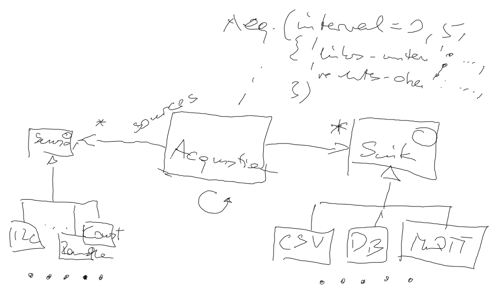

Python Advanced (2023-04-24 - 2023-04-26)¶
Day 1: Python Inside Out¶
Basics Recap¶
Generators¶
Dynamic Features¶
Object Oriented Programming¶
From Object Oriented Programming …
Day 2: Object Oriented Programming, And Miscellaneous Discussion¶
Morning Opening¶
Company code review. Cool, clean. Performance hint: use generators a lot.
Generate dataframes that appear in a directory from time to time: watch-dataframes.py
Generate mass data which would otherwise have to be loaded into memory: iter-measurement.py
Object Oriented Programming (Continued)¶
From Object Oriented Programming …
Clean Code?¶
From Is Software A Craft? Software Is A Craft! ⟶ Clean Code …
Group Project Kickoff¶
Big picture
Data acquisition: gathering sensor data
Varying kinds of sensors: physical hardware, internet proxy, MQTT, …
Varying kinds of information sinks: CSV, database, MQTT, …
Acquisition machinery: timestamping, frequency, buffering, …
Start hacking: “data logger device”, first sketch. To be implemented by three groups.
{kind=link}
Day 3: Group Project¶
Project Setup (IDE Usage?)¶
Apart from any kind of IDE (IDE’s tend to hide those details from you - this is not to help you, but to make you depend on them), these are the steps to make our project work:
Related topics:
How to make VS Code work (terminal is simpler, I’d say 🤨):
Continue Hacking¶
Until 10am; explain:
-
Someone said, “Lets check for file existence first, and create the file if it does not exist.” ⟶ Exclusive creation! (
open(filename, 'x')) -
Someone was using
unittest. Not exactly deprecated, butpytest(see pytest Introduction, By Example) rocks (not only compared tounittest, but absolutely) Random notes
Reopen file in every loop iteration (
open(..., 'a'))? Better leave it open until done? ⟶ RAII jjj linkPolymorphize loop iterations? Infinite vs. finite?
KeyboardInterrupt? Termination of an infinite loop? Graceful termination? ⟶threadingin unit test (setting stop flag in main thread). Ugly!
Test Driven Development, pytest¶
(Try to) establish mindset
pytestfixtures
Untold¶
Closures, Decorators And More¶
Error Handling And Recovery¶
Miscellaneous Threading¶
Show how the load/modify/store conflict appears to not be an issue in Python (?) (
code/race-load-modify-store.py)Could that be the GIL
What’s the GIL altogether?
Why could it be a bad idea to trust the GIL too much? (⟶ PEP 703)
Jason Brownlee mentions the same “issue” – there is no race condition. There used to, he says, before Python 3.10, but nowadays there’s not. He shows an contrived way to show a race (involving a
time.sleep(0)🙄)Fix that with a mutex (show
withusage!)Events. Maybe some live-hacked dice-rolling in a subthread.
Multiprocessing
Simply walk through the introductory example in multiprocessing — Process-based parallelism
Design Patterns Overview¶
Design patterns: problems, possible solutions